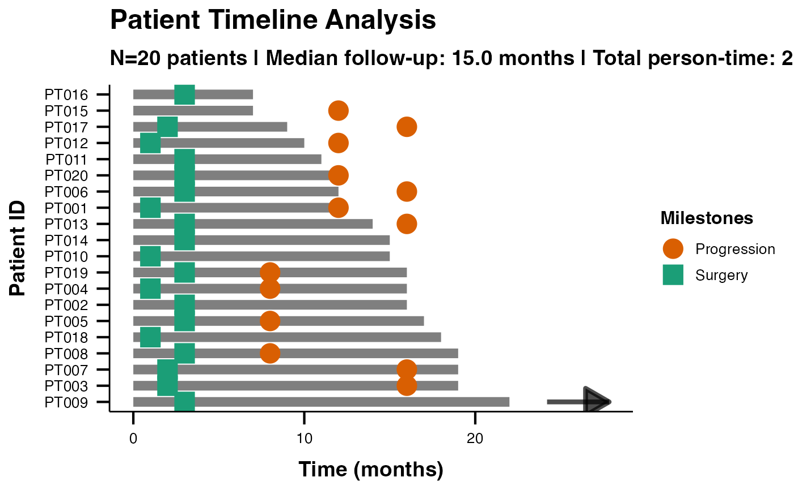

Creates comprehensive swimmer plots using the ggswim package to visualize patient timelines, clinical events, milestones, and treatment responses. Features enhanced data validation and complete ggswim integration for professional clinical visualization.
Usage
swimmerplot(
data,
patientID,
startTime,
endTime,
responseVar = NULL,
censorVar = NULL,
groupVar = NULL,
timeType = "raw",
dateFormat = "ymd",
timeUnit = "months",
timeDisplay = "relative",
maxMilestones = 5,
milestone1Name = "Surgery",
milestone1Date = NULL,
milestone2Name = "Treatment Start",
milestone2Date = NULL,
milestone3Name = "Response Assessment",
milestone3Date = NULL,
milestone4Name = "Progression",
milestone4Date = NULL,
milestone5Name = "Death/Last Follow-up",
milestone5Date = NULL,
showEventMarkers = FALSE,
eventVar = NULL,
eventTimeVar = NULL,
laneWidth = 3,
markerSize = 5,
plotTheme = "ggswim",
colorPalette = "default",
showLegend = TRUE,
referenceLines = "none",
customReferenceTime = 12,
customReferenceDate = "",
sortVariable = NULL,
sortOrder = "duration_desc",
showInterpretation = TRUE,
personTimeAnalysis = TRUE,
responseAnalysis = TRUE,
showGlossary = FALSE,
showCopyReady = FALSE,
showAbout = FALSE,
exportTimeline = FALSE,
exportSummary = FALSE
)Arguments
- data
The data as a data frame containing patient timeline information.
- patientID
Variable containing unique patient identifiers.
- startTime
Time/date when observation/treatment started.
- endTime
Time/date when observation/treatment ended.
- responseVar
Optional variable for response types (e.g., CR, PR, SD, PD) to color lanes.
- censorVar
Optional variable indicating censoring status for ongoing treatment arrows. Use 0/FALSE/"censored"/"alive" for ongoing patients (shows arrow), or 1/TRUE/"event"/"dead" for completed follow-up (no arrow). If not provided, arrows are drawn for patients at the latest time point.
- groupVar
Optional grouping variable for comparing response rates between patient groups (e.g., treatment arms, disease subtypes). When specified, Fisher's exact tests compare ORR and DCR between groups. Groups are also shown in separate colors.
- timeType
Select whether time values are raw numbers or dates/times.
- dateFormat
Select the date/time format in your data (only used when Time Input Type is Date/Time).
- timeUnit
Time unit to use for display and calculations.
- timeDisplay
Choose whether to align all start times to 0 or use absolute start times.
- maxMilestones
Maximum number of milestone events to support.
- milestone1Name
Name for the first milestone event (e.g., Surgery, Treatment Start).
- milestone1Date
Date/time variable when milestone 1 occurred.
- milestone2Name
Name for the second milestone event.
- milestone2Date
Date/time variable when milestone 2 occurred.
- milestone3Name
Name for the third milestone event.
- milestone3Date
Date/time variable when milestone 3 occurred.
- milestone4Name
Name for the fourth milestone event.
- milestone4Date
Date/time variable when milestone 4 occurred.
- milestone5Name
Name for the fifth milestone event.
- milestone5Date
Date/time variable when milestone 5 occurred.
- showEventMarkers
Whether to display event markers along patient timelines.
- eventVar
Variable containing event type labels for markers.
- eventTimeVar
Variable containing event times (defaults to start time if not specified).
- laneWidth
Width/thickness of patient timeline lanes.
- markerSize
Size of event markers and milestone markers.
- plotTheme
Visual theme for the swimmer plot.
- colorPalette
Select color palette for response categories and groups. Colorblind Safe uses perceptually uniform colors distinguishable by all color vision types. High Contrast is optimized for projectors and printing. Monochrome ensures clarity in grayscale publications.
- showLegend
Whether to display the plot legend.
- referenceLines
Add reference time lines to the plot for clinical context.
- customReferenceTime
Custom time point to mark with a reference line (only used when Reference Lines is set to Custom).
- customReferenceDate
When using Date/Time with Absolute display, provide a calendar date (e.g., 2023-06-01) to draw a custom reference line. If left blank, the Custom Reference Time is used as an offset from the earliest start date.
- sortVariable
Optional variable to sort patient timelines (defaults to duration-based sorting).
- sortOrder
How to order patients in the visualization.
- showInterpretation
Whether to display automated clinical interpretation of the timeline data.
- personTimeAnalysis
Whether to include epidemiological person-time metrics in the analysis.
- responseAnalysis
Whether to analyze response patterns when response variable is provided.
- showGlossary
Display a glossary of clinical terms and statistical concepts used in the analysis.
- showCopyReady
Generate copy-ready text suitable for manuscripts and clinical reports.
- showAbout
Display information about when and how to use swimmer plot analysis.
- exportTimeline
Export processed timeline data for external analysis.
- exportSummary
Export comprehensive summary statistics and clinical metrics.
Value
A results object containing:
results$errorNotice | a html | ||||
results$warningNotice | a html | ||||
results$infoNotice | a html | ||||
results$instructions | a html | ||||
results$plot | an image | ||||
results$summary | a table | ||||
results$interpretation | a html | ||||
results$personTimeTable | a table | ||||
results$milestoneTable | a table | ||||
results$eventMarkerTable | a table | ||||
results$timelineData | an output | ||||
results$summaryData | an output | ||||
results$exportInfo | a html | ||||
results$validationReport | a html | ||||
results$advancedMetrics | a table | ||||
results$groupComparisonTest | a table | ||||
results$clinicalGlossary | a html | ||||
results$copyReadyReport | a html | ||||
results$aboutAnalysis | a html |
Tables can be converted to data frames with asDF or as.data.frame. For example:
results$summary$asDF
as.data.frame(results$summary)
Examples
# \donttest{
# Clinical trial swimmer plot example
data <- data.frame(
PatientID = paste0("PT", formatC(1:20, width = 3, flag = "0")),
StartTime = rep(0, 20),
EndTime = sample(6:24, 20, replace = TRUE),
Response = sample(c("CR", "PR", "SD", "PD"), 20, replace = TRUE),
Surgery = sample(c(1, 2, 3, NA), 20, replace = TRUE),
Progression = sample(c(8, 12, 16, NA), 20, replace = TRUE)
)
swimmerplot(
data = data,
patientID = "PatientID",
startTime = "StartTime",
endTime = "EndTime",
responseVar = "Response",
milestone1Name = "Surgery",
milestone1Date = "Surgery",
milestone2Name = "Progression",
milestone2Date = "Progression",
showEventMarkers = TRUE,
showInterpretation = TRUE
)
#>
#> SWIMMER PLOT
#>
#> character(0)
#>
#> Timeline Summary Statistics
#> ───────────────────────────────────
#> Metric Value
#> ───────────────────────────────────
#> Number of Patients 20.00000
#> Total Observations 20.00000
#> Median Duration 11.00000
#> Mean Duration 11.95000
#> Total Person-Time 239.00000
#> Mean Follow-up 11.95000
#> CR Rate (%) 15.00000
#> PD Rate (%) 15.00000
#> PR Rate (%) 45.00000
#> SD Rate (%) 25.00000
#> ───────────────────────────────────
#>
#>
#> <div style='background-color: #e8f5e8; padding: 15px; border-radius:
#> 5px; margin: 10px 0;'>
#>
#> Clinical Interpretation
#>
#> <div style='margin: 10px 0;'><h5 style='color: #2e7d32;'>Timeline
#> Analysis:
#>
#> Study included 20 patients with 20 timeline observations. Median
#> follow-up was 11.0 months (range: 6.0 to 21.0 months).
#>
#> <div style='margin: 10px 0;'><h5 style='color: #2e7d32;'>Person-Time
#> Analysis:
#>
#> Total person-time: 239.0 months. Average follow-up per patient: 11.9
#> months.
#>
#> <div style='margin: 10px 0;'><h5 style='color: #2e7d32;'>Response
#> Pattern Analysis:
#>
#> Most common response was PR (45.0% of observations). Response
#> distribution shows clinical patterns suitable for efficacy analysis.
#>
#> Person-Time Analysis
#> ─────────────────────────────────────────────────────────────────────────────
#> Response Type Patients Total Time Mean Time Follow-up Density
#> ─────────────────────────────────────────────────────────────────────────────
#> CR 3 30.00000 10.000000 10.000000
#> PD 3 43.00000 14.330000 6.977000
#> PR 9 119.00000 13.220000 7.563000
#> SD 5 47.00000 9.400000 10.638000
#> ─────────────────────────────────────────────────────────────────────────────
#>
#>
#> Milestone Event Summary
#> ─────────────────────────────────────────────────────────
#> Milestone Events Median Time Time Range
#> ─────────────────────────────────────────────────────────
#> Progression 14 8.000000 8 - 16 months
#> Surgery 13 2.000000 1 - 3 months
#> ─────────────────────────────────────────────────────────
#>
#>
#> Event Marker Summary
#> ────────────────────────────────────────────────────
#> Event Type Count Percentage Median Time
#> ────────────────────────────────────────────────────
#> ────────────────────────────────────────────────────
#>
#>
#> Advanced Clinical Metrics
#> ────────────────────────────────────────────────────────────────────────────────────────────────────────────────────────────────────────────────────────────────
#> Metric Value 95% CI Unit Clinical Interpretation
#> ────────────────────────────────────────────────────────────────────────────────────────────────────────────────────────────────────────────────────────────────
#> Median Follow-up Time 11.000000 months Central tendency of patient follow-up duration
#> Interquartile Range 9.500000 months Middle 50% of follow-up duration range
#> Total Study Person-Time 239.000000 months cumulative Total observation time across all patients
#> Follow-up Density 8.368000 per 100 months Number of patients per 100 units of observation time (descriptive metric)
#> Objective Response Rate (ORR) 60.000000 36.1 - 80.9 percent Proportion with complete or partial response
#> Disease Control Rate (DCR) 85.000000 62.1 - 96.8 percent Proportion with response or stable disease
#> ────────────────────────────────────────────────────────────────────────────────────────────────────────────────────────────────────────────────────────────────
#>

# }